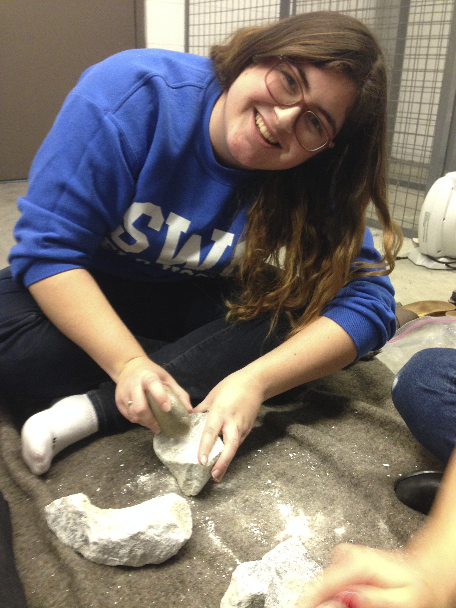

My name is Sierra McKinney and I am a fifth year anthropology student at the University of Victoria in Victoria, Canada. In my day-to-day life I utilize the phrase “I dig it” far to frequently than a young twenty something should. It is here I should note that I also commonly use the terms rad, dude and coolio. However this website will be just that; a rad collection of interesting archaeological stories, artifacts and information, with the odd inclusion of my own, hopefully interesting, experiences in the field and as a student; essentially things that I dig. This website will also serve as my portfolio for ANTH 485: Digital Archaeology. If digital and public archaeology is of interest a discussion of my rationale for my projects and this website can be found here.
I have always loved history and archaeology. Even as a small child I preferred digging holes in the sand to building castles. I was always eager to discover the next coin or shell hidden just beneath the surface. As I got older I became enamored with Indiana Jones, and though I have since learned that his archaeological methods are deeply flawed, I still appreciate him as an inspiration in my life. Today my main area of interest is mortuary archaeology, specifically in the Paleolithic period.

Here I am attempting to recreate a Paleolithic Stone Lamp